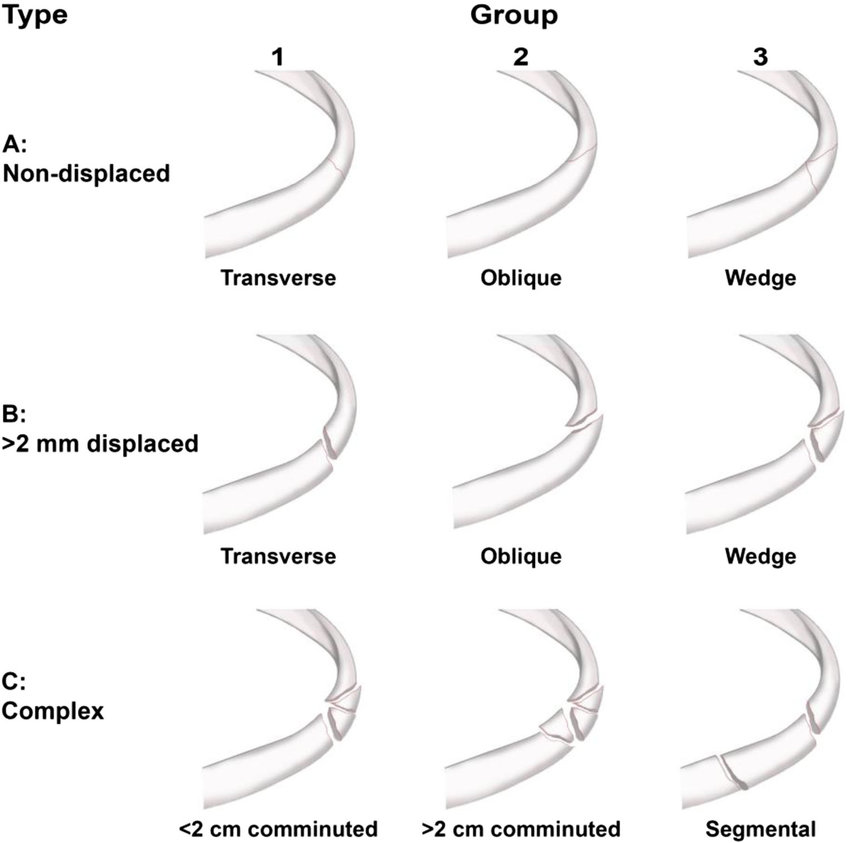
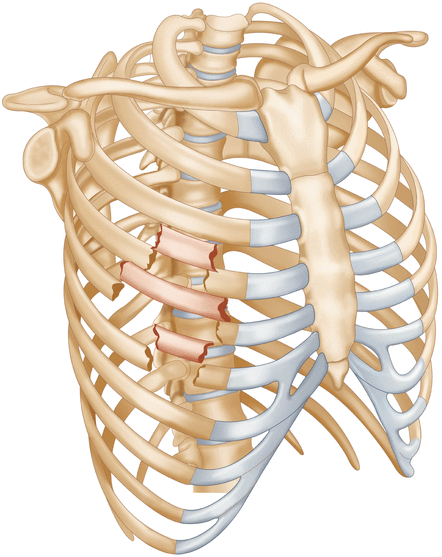
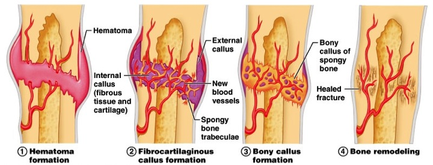

Knowledge & Training
Zimmer Biomet - Surgical Stabilization of Rib Fractures (SSRF)
Table of Contents
Links to each section of this document are provided below:
- Resources
- Portfolio Overview
- Clinical Evidence Review
- Hus Paper
- Tanaka Study
- Denver Study
- Non-Flail Study
- Rib Fracture in the Elderly: Bulger
- Rib Fracture in the Elderly: Fitzgerald
- When Less is More
- Schubl Prospective Advantage
-
Program Integration & Devlopment
-
SSRF Procedural Walk-Through
- Foundational Review
- Key Concept: Thoracic Anatomy
- Key Concept: Surgical Approaches
- Key Concept: VATS
- Key Concept: Rib Fracture Types
- Key Concept: Flail Chest
- Key Concept: Bone Healing
- Competition
Resources
airtable zb base
loop
google sheets
key zimmer contacts
zb billing process & contacts
Portfolio Overview
Rib fractures are a common injury. Strategies to optimize pain control and healing exist
along a spectrum—from multimodal oral and intravenous
medications, to surgical stabilization
of rib fractures (SSRF). For patients with flail chest, a flail
segment, or three or more displaced rib fractures, surgical
stabilization can offer decreased time on a ventilator,
shorter intensive care unit and hospital stays, decreased
risk of pneumonia or tracheostomy, faster return to work,
decreased pain, lower mortality, lower inpatient charges
and is cost-effective therapy for health insurance payors
and healthcare systems. However, SSRF is underutilized and may not be available at all healthcare facilities.
High-quality SSRF borrows
surgical principles and techniques from trauma,
orthopedics, and thoracic surgery. Zimmer Biomet currently offers a comprehensive portfolio of SSRF products that are designed to address the needs of the patient and the surgeon. RibFix Blue is our extrathoracic plating system that is designed to provide a stable construct for the fixation of rib fractures. RibFix Advantage is our intrathoracic plating system providing a different modality to traditional methods. This novel approach allows for a stronger fixation, while also providing a more minimally invasive approach.
Rib Trauma Value Brief
Value Brief Internal Deck
Clinical Evidence Review
Hus Paper
Tanaka Study
Denver Study
Non-Flail Study
SSRF in the Elderly: Bulger
SSRF in the Elderly: Fitzgerald
When Less is More
Schubl Advantage
CWIS Webinar - Rib Fractures in the 65-Year and Older population
CWIS Link
Program Integration & Devlopment
- Identify and Cultivate Champions
- Facilitate Knowledge Transfer Throughout Surgical Team
- Develop a Protocol
- Define and Manage Information Gathering Techniques
- Develop a Business Case for Upstream Management
- Continued Education - Primary Surgical Team
- Continued Education - Cross-Functional
Masterclass in Program Development - Dr. Chris Towe
CWIS Protocol
SSRF Procedural Walk-Through
Key Concept: SSRF Indications
Key Concept: SSRF Contraindications
Key Concept: SSRF General Considerations
Key Concept: SSRF Pre-Op Planning
Foundational Review
Key Concept: Thoracic Anatomy
Key Concept: Surgical Approaches
Key Concept: Rib Fracture Types

Key Concept: Flail Chest
Flail chest is defined as a segment of the chest wall that moves paradoxically during respiration. It is caused by multiple rib fractures in multiple locations, which allows the chest wall to move independently from the rest of the thoracic cage.

Key Concept: VATS
Key Concept: Bone Healing
The primary objective of SSRF is to reduce the fracture, and fix it in place to allow for healing. Bone healing is a complex process that involves the coordination of multiple cell types and signaling molecules. The process of bone healing can be broken down into three phases: inflammatory, reparative, and remodeling.

Competition
Competition Overview: